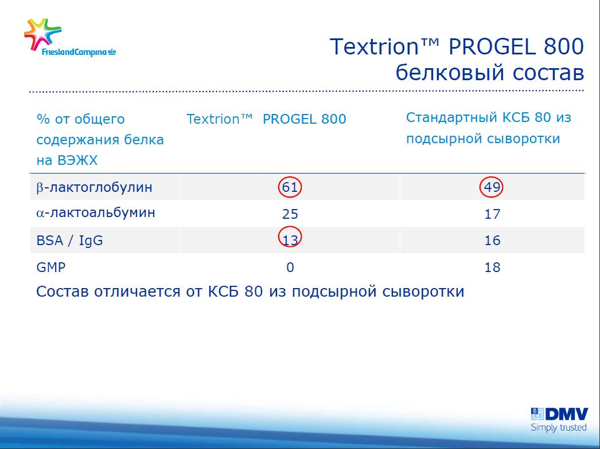

Campina(DMV) - Textrion Progel 800 - Сывороточный протеин

{kind=link}
{kind=link}
{kind=link}
| |
|
Белок - 78,5-81,3%
Влажность - max.4,6 %
Жир - max.4,8 %
Углеводы(лактоза) - max.6,5 %
Зола (550°C)- 4.4 %
pH - 6,5
Энергетическая ценность: 394 кКал/ 1650Дж.
Незаменимые аминокислоты: |
Заменимые аминокислоты: |
| Треонин - 5,3 | Аспаргин - 12 |
| Валин - 5,6 | Серин - 4,6 |
| Метионин - 2,3 | Глутамин - 9,4 |
| Изолейцин - 5,9 | Пролин - 6,2 |
| Лейцин - 13,2 | Глицин - 1,9 |
| Фениланин - 3,9 | Аланин - 5,2 |
| Лизин - 10,9 | Цистин - 2,7 |
| Триптофан - 2,1 | Тирозин - 3,7 |
| Гистидин - 2,2 | |
| Аргинин - 2,9 |
Кальций - 365
Магний - 52
Калий - 524
Содержание:
| Введение; | |||
| 1 Сывороточный протеин; | |||
|
|||
| 2 Преимущества для набора мышечной массы; | |||
| 3 Безопасность и вред протеина; | |||
| 4 Непереносимость протеина; | |||
| 6 Источники; | |||
Введение
Отличие концентрата сывороточного белка Textrion Progel 800 из кислой сыворотки от КСБ из сырных сывороток в более лучшем составе Бета-лактоглобулин и Альфа-лактальбумин и отсутствие GMP.

Состав сывороточного протеина:
—
—
—
—
—
—
—
—
Сывороточный протеин
Изготовление
После сворачивания молока образуется сыворотка, в которой содержатся все вещества, растворимые в молоке: 5%-й раствор лактозы, минералы и лактальбумин. Сыворотку получают после изготовления сыра следующим образом: сначала снимают жир, а затем обрабатывают его так, чтобы он был пригоден для употребления в пищу. Процесс обработки может состоять из обычного высушивания. В иных случаях содержание белка можно увеличить путем удаления липидов и других веществ, в составе которых нет протеинов. К примеру, сушка путем распыления после фильтрации мембраны помогает удалить из сыворотки белковые вещества.


Состав
Сывороточный протеин состоит из глобулярных белков, получаемых при производстве сыра из коровьего молока. Белок коровьего молока на 20% состоит из сыворотки и на 80% – из казеина. Следует отметить, что в белке человеческого молока это соотношение составляет 60% и 40% соответственно.Сывороточный белок обычно представляет собой смесь бета-лактоглобулина (~ 65 %), альфа-лактальбумина (~ 25%), сывороточного альбумина (~ 8%). Доля белка в сыворотке (примерно 10% от общего объема сухих веществ) состоит из четырех основных и шести вспомогательных белковых веществ. Основные белковые составляющие в сыворотке – это бета-лактоглобулин, альфа-лактальбумин, бычий сывороточный альбумин и иммуноглобулины.
Основные формы
Сывороточный протеин обычно поставляется в трех основных формах: концентрат (WPC), изолят (WPI), и гидролизат (WPH).
Концентраты как правило, содержат немного жиров и холестерина, однако степень их очистки не слишком высока. Доля биологически активных веществ, а также углеводов в виде лактозы составляет 29% – 89%.Изоляты подвергаются более тщательной очистке. Содержание биоактивных веществ находится на уровне более 90%. Для концентратов и изолятов характерен мягкий молочный вкус.Гидролизаты – это сывороточные белки, которые легко усваиваются человеческим организмом, но стоят они, как правило, значительно дороже. Высокогидролизованная сыворотка может быть менее аллергенной, чем другие формы. Имеет горький вкус.

Преимущества для набора мышечной массы
Эффект от набора мышечной массы с использованием протеина, а не за счет силовых тренировок остается спорным. Согласно некоторым исследованиям, группа мужчин, употребляющих сывороточный протеин, получила лучший результат, чем группа, которая тренировалась и не употребляла белковые добавки. Помимо этого, многие ученые считают, что свойства сывороточного протеина превосходят по своей ценности свойства казеина.
Однако другие исследования показывают, что протеин практически не оказывает никакого эффекта. Авторами одного из таких исследований был сделан следующий вывод: молодые люди, которые употребляли белки во время структурированной программы тренировок с использованием силовых тренажёров, получили минимальный положительный эффект от употребления сывороточного протеина. Следует отметить, что в ходе эксперимента ученые не контролировали потребление белка из других источников в рационе участников исследования.
Еще одно исследование, в котором участвовала группа пожилых мужчин, показало, что добавление сывороточного протеина в рацион до и после тренировок не оказывает существенного влияния на гипертрофию скелетных мышц. Эффект от протеина ученые сравнили с плацебо. Согласно результатам данного исследования, сроки приема протеиновых добавок не оказывают существенного влияния на силовые показатели, самочувствие или фигуру человека.
Безопасность и вред протеина
Влияние сывороточного протеина на здоровье человека вызывает большой медицинский интерес и активно изучается учеными как потенциальное лечебное средство от некоторых заболеваний.
В настоящее время использование сывороточного протеина в качестве источника аминокислот и его положительное воздействие на организм при болезнях сердца и раковых заболеваниях является объектом многих исследований. Сыворотка является богатым источником разветвленных аминокислот (ВСАА), которые стимулируют синтез белка. Ключевое значение для стимуляции синтеза белка играет лейцин. Поступление значительного количества лейцина в организм (например, с сывороточными протеиновыми добавками) ускоряет процесс восстановления после физических нагрузок.
Сывороточный протеин содержит аминокислоты цистеина, которые могут быть использованы для создания глутатиона. Некоторые исследования показали, что количество цистеина в рационе человека не оказывает значительного влияния на синтез глутатиона.[18]. Согласно другому исследованию, большое количество сывороточного белка может увеличить уровень содержания глутатиона. Глутатион является антиоксидантом, который защищает организм от свободных радикалов и некоторых токсинов. Исследования, проводимые на животных, показали, что молочные белки могут снизить риск развития раковых опухолей.
Сывороточный протеин обычно продается и употребляется как диетическая добавка. Из-за многочисленных дискуссий о полезности некоторых продуктов его отнесли к группе препаратов нетрадиционной медицины. Сывороточные белки могут вызывать аллергии, однако основным аллергеном в молоке служат лактоза и казеин.
После проведения доклинических испытаний на грызунах ученые сделали вывод о том, что сывороточный протеин может обладать противовоспалительными и противоопухолевыми свойствами.
Непереносимость протеина
У некоторых людей потребление сывороточного белка может вызывать нарушения со стороны пищеварительной системы: газы, вздутие живота, кишечные спазмы. Причина непереносимости до сих пор не ясна, обсуждение часто ведется на форумах по силовому тренингу. Согласно одному из предположений, данные расстройства обусловлены непереносимостью лактозы некоторыми людьми.[26] Читайте статью: Протеин и гейнер без лактозы
Также оправдано мнение, что проблемы связаны с функциональными ограничениями. Человеческий организм может усвоить лишь от 4 до 9 граммов белка в час. Поэтому в случае, если спортсмен употребляет большое количество белка (независимо от его типа: сыворотка, казеин, яйца, соя, мясо и т.д.), часть веществ не переваривается в желудочно-кишечном тракте.[27] Непереваренные белки в толстой кишке подвергаются процессу бактериального брожения, что приводит к расстройству пищеварения.[28]
Подобные симптомы могут быть вызваны компонентами, которые содержатся в низкокачественных протеиновых коктейлях (например, лактоза в концентрате сывороточного протеина), а также в искусственных подсластителях, которые входят в состав большинства коммерческих белковых порошков. Влияние этих веществ можно предотвратить только путем перехода на несладкий сывороточный изолят или гидролизат. Если симптомы не проходят даже при употреблении белка в более чистом виде, следует перейти на другой вид, например соевый или яичный.
Источники
1. Hakkak R, Korourian S, Ronis MJ, Johnston JM, Badger TM (May 2001). "Dietary whey protein protects against azoxymethane-induced colon tumors in male rats". Cancer Epidemiol. Biomarkers Prev. 10 (5): 555–8.
2. Xiao R, Carter JA, Linz AL, Ferguson M, Badger TM, Simmen FA (September 2006). "Dietary whey protein lowers serum C-peptide concentration and duodenal SREBP-1c mRNA abundance, and reduces occurrence of duodenal tumors and colon aberrant crypt foci in azoxymethane-treated male rats". J. Nutr. Biochem. 17 (9): 626–34.
3. Krissansen GW (December 2007). "Emerging health properties of whey proteins and their clinical implications". J Am Coll Nutr 26 (6): 713S–23S.
4. Marshall, K (2004). "Therapeutic applications of whey protein". Alternative Medicine Review 9 (2): 136–156.
5. Wal JM (November 2004). "Bovine milk allergenicity". Ann. Allergy Asthma Immunol. 93 (5 Suppl 3): S2–11. doi:10.1016/S1081-1206(10)61726-7.
6. Burks W, Helm R, Stanley S, Bannon GA (June 2001). "Food allergens". Curr Opin Allergy Clin Immunol 1 (3): 243–8.
7. "Whey." The Encyclopædia Britannica. 15th ed. 1994
8. Foegeding, EA; Davis, JP; Doucet, D; McGuffey, MK (2002). "Advances in modifying and understanding whey protein functionality". Trends in Food Science & Technology 13 (5): 151–9.
9. Tunick MH (2008). "Whey Protein Production and Utilization.". In Onwulata CI, Huth PJ (abstract). Whey processing, functionality and health benefits. Ames, Iowa: Blackwell Publishing; IFT Press. pp. 1–13.
10. Lee YH (November 1992). "Food-processing approaches to altering allergenic potential of milk-based formula.". J. Pediatr. 121 (5 Pt 2): S47–50.
11. 11,0 11,1 Haug A, Høstmark AT, Harstad OM, A; Høstmark, AT; Harstad, OM (25 September 2007). "Bovine milk in human nutrition – a review". Lipids Health Dis 6: 25.
12. 12,0 12,1 Burke, Darren G.. "The Effect of Whey Protein Supplementation With and Without Creatine Monohydrate Combined With Resistance Training on Lean Tissue Mass and Muscle Strength". International Journal of Sport Nutrition and Exercise Metabolism. Human Kinetics Publishers, Inc.. Retrieved 2012-04-04.
13. 13,0 13,1 Cribb, Paul J.; Andrew D. Williams, Michael F. Carey, Alan Hayes. "The Effect of Whey Isolate and Resistance Training on Strength, Body Composition, and Plasma Glutamine". International Journal of Sport Nutrition and Exercise Metabolism. Human Kinetics, Inc. Retrieved 2012-04-04.
14. Jay R. Hoffman and Michael J. Falvo (2004). "Protein - Which is best?". Journal of Sports Science and Medicine (3): 118–130.
15. Luhovyy BL, Akhavan T, Anderson GH (2007). "Whey proteins in the regulation of food intake and satiety". Journal of the American College of Nutrition 26 (6): 704S–712S.
16. Candow, DG; Burke, NC; Smith-Palmer, T; Burke, DG (2006). "Effect of whey and soy protein supplementation combined with resistance training in young adults". International journal of sport nutrition and exercise metabolism 16 (3): 233–44.
17. Hoffman, JR; Ratamess, NA; Tranchina, CP; Rashti, SL; Kang, J; Faigenbaum, AD (2009). "Effect of protein-supplement timing on strength, power, and body-composition changes in resistance-trained men". International journal of sport nutrition and exercise metabolism 19 (2): 172–85.
18. Yang, Y; Breen, L; Burd, NA; Hector, AJ; Churchward-Venne, TA; Josse, AR; Tarnopolsky, MA; Phillips, SM (2012 Feb 7). "Resistance exercise enhances myofibrillar protein synthesis with graded intakes of whey protein in older men.". The British journal of nutrition: 1-9.
19. Rieu I, Balage M, Sornet C, et al. (April 2007). "Increased availability of leucine with leucine-rich whey proteins improves postprandial muscle protein synthesis in aging rats". Nutrition 23 (4): 323–31.
20. Kimball Scott; Jefferson, LS (2006). "Signaling Pathways and Molecular Mechanisms through which Branched-Chain Amino Acids Mediate Translational Control of Protein Synthesis". The Journal of Nutrition 136 (1): 227S–31S.
21. Fujita, Dreyer, Drummon, Glynn, cadenas, Et Al. (2007). "Nutrient signalling in the regulation of human muscle protein synthesis". The Journal Physiology 582 (Pt 2): 813–23.
22. Ha E, Zemel MB (May 2003). "Functional properties of whey, whey components, and essential amino acids: mechanisms underlying health benefits for active people (review)". J. Nutr. Biochem. 14 (5): 251–8.
23. Layman D.K., Evans E., Baum J.I., Seyler J., Erickson D.J., Boileau R.A. (2005). "Dietary protein and exercise have additive effects on body composition during weight loss in adult women". J. Nutr 135: 1903–1910.
24. Courtney-Martin G, Rafii M, Wykes LJ, Ball RO, Pencharz PB (November 2008). "Methionine-adequate cysteine-free diet does not limit erythrocyte glutathione synthesis in young healthy adult men". J. Nutr. 138 (11): 2172–8.
25. Zavorsky, Kubow, Grey, Riverin, Lands (2007). "An open-label dose-response study of lymphocyte glutathione levels in healthy men and women receiving pressurized whey protein isolate supplements". International Journal of Food Sciences and Nutrition 58 (6): 429–36.
26. P.W.Parodi. "A Role for Milk Proteins and their Peptides in Cancer Prevention". Current Pharmaceutical Design 13 (8): 813–828.
27. http://www.livestrong.com/article/521163-digestive-problems-commonly-associated-with-whey-protein/
28. Does 100% whey protein make you have bad gas?, Livestrong.com
29. http://sportswiki.ru